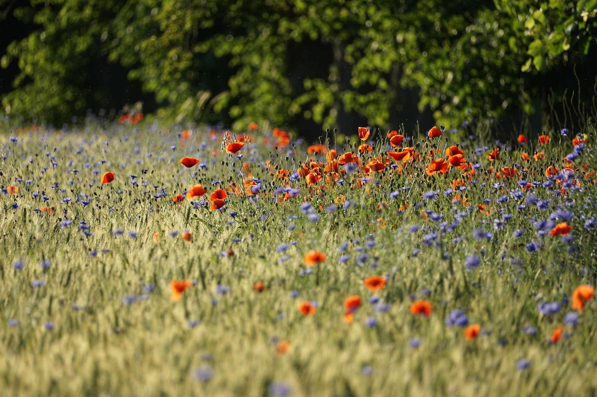
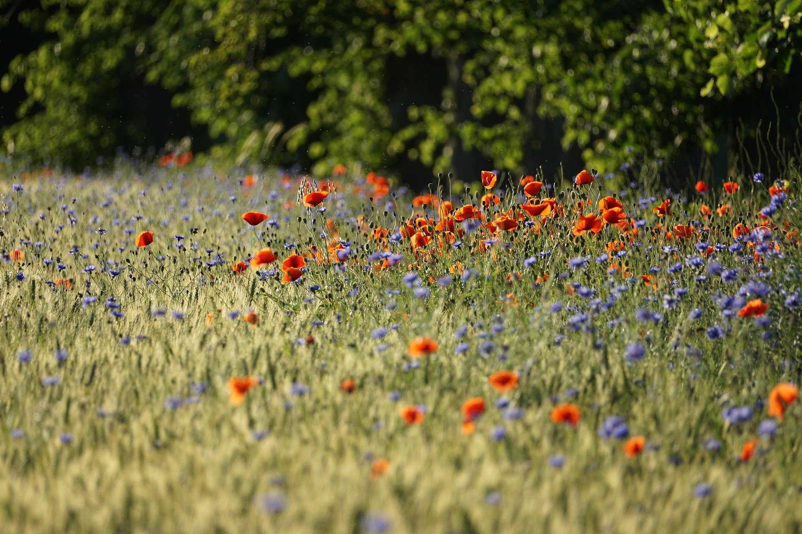
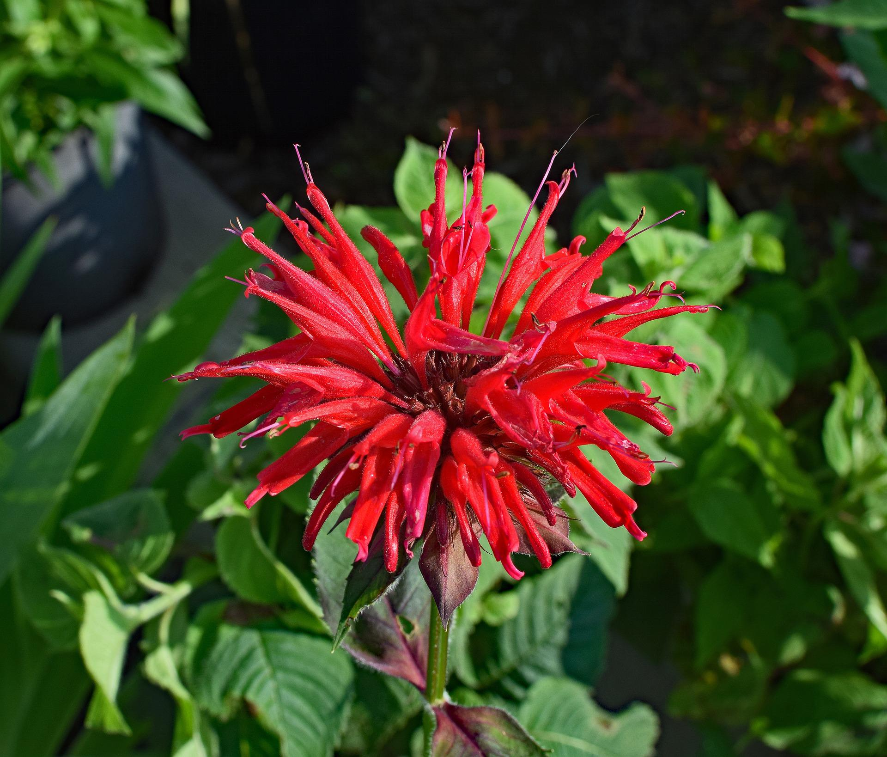
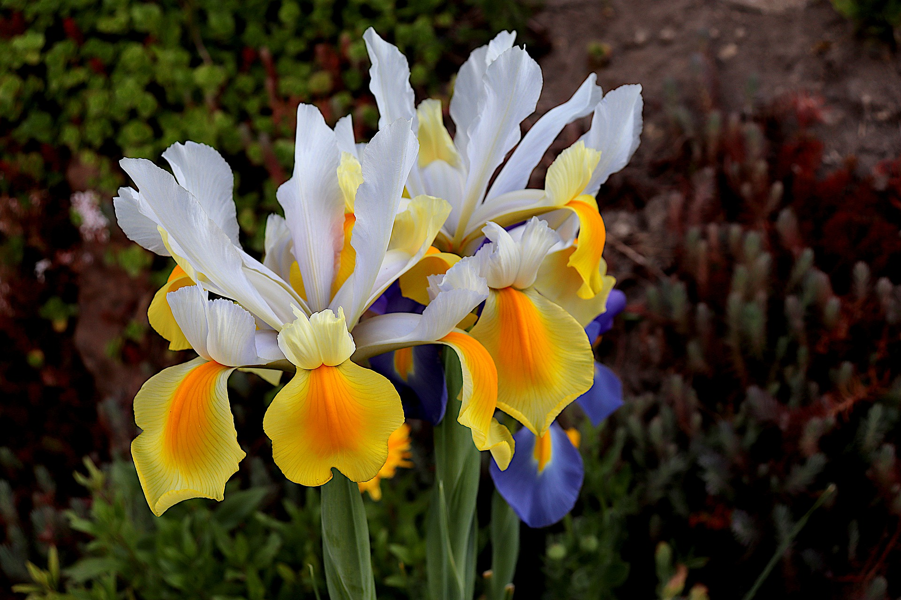
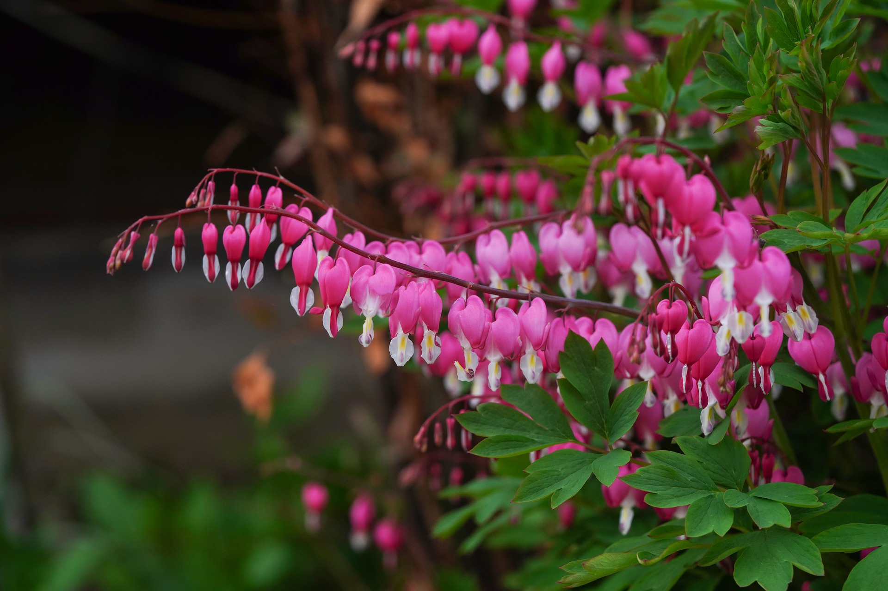
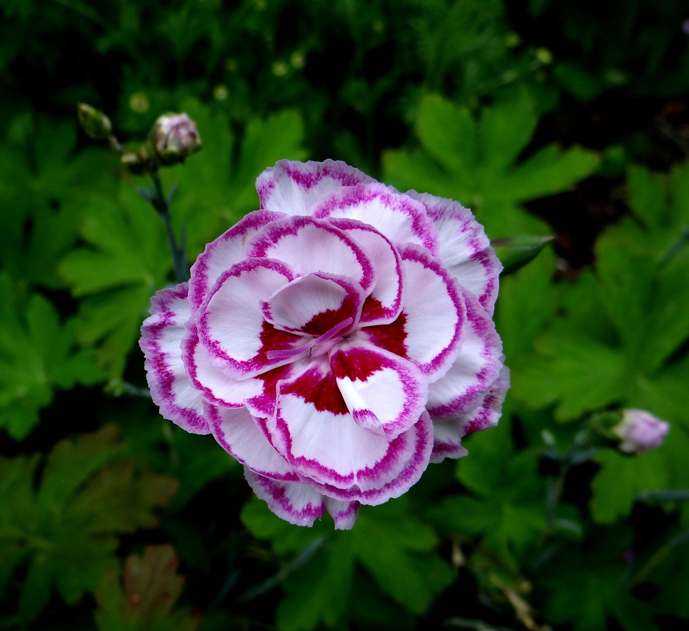
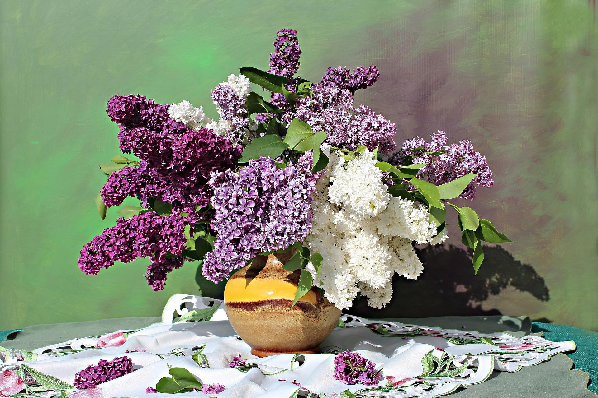
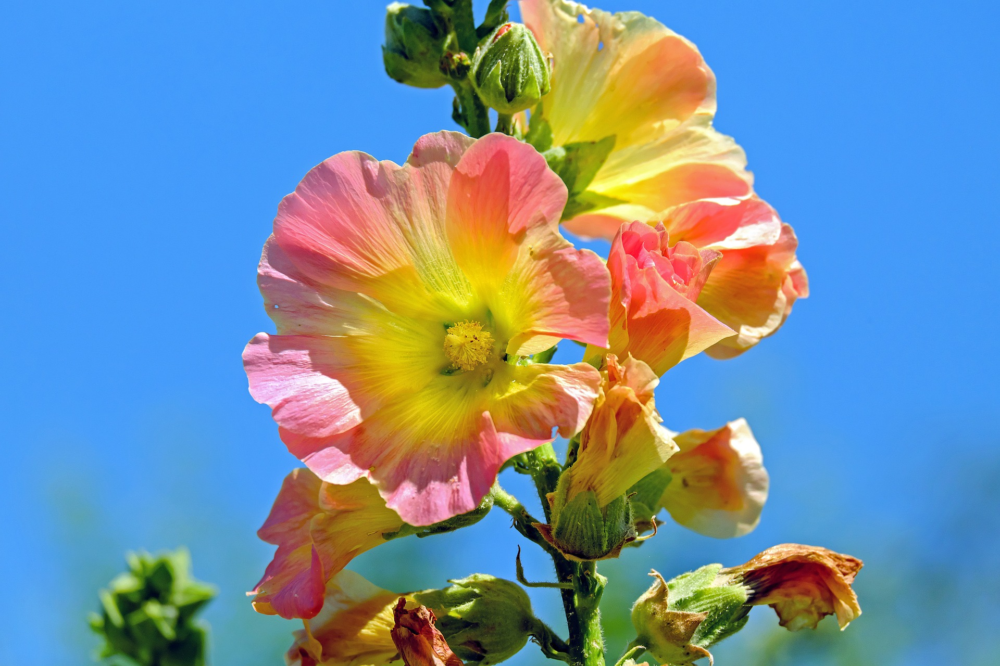
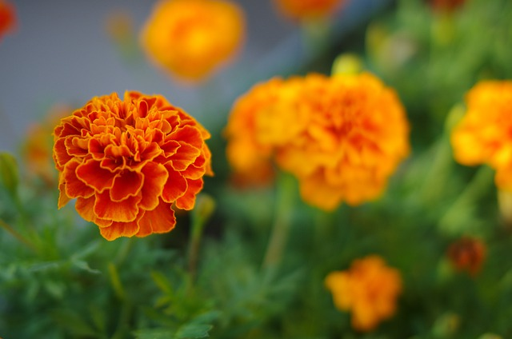
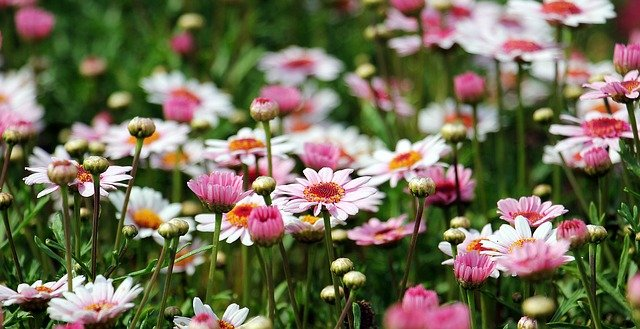

Beauty in Every Color
Can you identify each flower?
(hover over the picture to see the correct name)
 What am I? “Bee Balm Flower”
 What am I? “Bearded Iris”
 What am I? “Bleeding Heart”
What am I? “Black Eyed Susan”
 What am I? “Carnation”
 What am I? “Lilac Flowers”
 What am I?
“Daffodils”
What am I?
“Daffodils”
 What am I? “Hollyhock"
 What am I? “Marigolds”
 What am I? “Daisies”